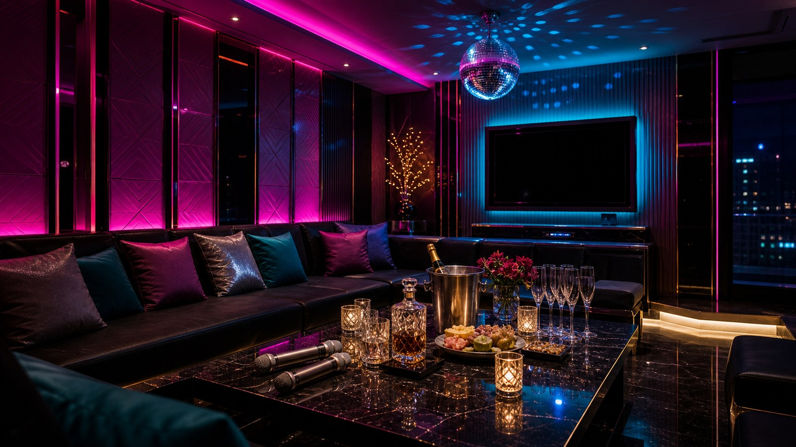

王牌巴塞隆納便服酒店適合什麼場合？
王牌巴塞隆納便服酒店適合低調接待，熟客或小型商務會比較對味。 常見適合情境包括低調私人聚會、安靜聊天或商務談話、重視隱私的熟客安排。便服店比較適合低調聊天和熟客聚會；如果很在意隱私，集合方式、入口和包廂安排都要提前確認。
王牌巴塞隆納便服酒店適合低調接待，熟客或小型商務會比較對味。 王牌巴塞隆納便服酒店走便服與低調接待路線，適合熟客、小型商務與不想太高調的聚會。預約時可先說明偏好安靜或熱鬧。
王牌巴塞隆納便服酒店目前以預約確認集合點為主，安排時可先抓在台北市區；出發前再核對入口、樓層與當日包廂，會比只看舊地址更準。
便服店主打低調、自然聊天和隱私感，適合熟客、小型商務或不想太高調的聚會。 包廂費約 NT$ 3,500 起、人頭費約 NT$ 500／人、服務費約 NT$ 1,000／包、檯費約 NT$ 2,500／60 分鐘；酒水、指定、加時與刷卡費可能另外計算。安排前先講人數、時間、預算和想要的氣氛，現場會比較好抓。
| 分類 | 便服店／禮便服店 |
|---|---|
| 區域 | 台北市區，實際集合地點請預約確認 |
| 地址／地點 | 預約時確認集合地點、入口與樓層 |
| 營業時間 | 晚間營業，請預約確認 |
| 包廂費估算 | NT$ 3,500 起 |
| 人頭費估算 | NT$ 500／人 |
| 服務費估算 | NT$ 1,000／包 |
| 檯費估算 | NT$ 2,500／60 分鐘 |
| 基本時間 | 120 分鐘起 |
| 方案備註 | 包廂桌面、服務人員；酒水多依店家酒單另計 |
依公開網路名單與消費資訊整理，實際營業狀態、價格與包廂安排以預約確認為準。
王牌巴塞隆納便服酒店適合低調接待，熟客或小型商務會比較對味。 常見適合情境包括低調私人聚會、安靜聊天或商務談話、重視隱私的熟客安排。便服店比較適合低調聊天和熟客聚會；如果很在意隱私，集合方式、入口和包廂安排都要提前確認。
王牌巴塞隆納便服酒店目前以預約確認集合點為主，安排時可先抓在台北市區；出發前再核對入口、樓層與當日包廂，會比只看舊地址更準。 多人同行時，建議先把集合點、抵達時間和聯絡方式講好，進場會比較順。
和制服店相比，便服店比較不強調主題造型；和禮服店相比，氣氛通常更放鬆，也比較適合低調接待。 比較王牌巴塞隆納便服酒店時，可以一起看台北便服店推薦、便服店地點、便服店地址、中山區便服店、便服店隱私，但真正要決定的是這次場合、人數和預算是否合拍。
預約重點
查王牌巴塞隆納便服酒店時，常會一起比較王牌巴塞隆納便服酒店、台北便服店推薦、便服店地點、便服店地址、中山區便服店、便服店隱私、台北便服店、王牌酒店、巴塞隆納俱樂部。這些詞可以幫你快速確認店型、地點、費用和預約方向，不用只靠店名猜現場感。
搜尋便服店地址時，不能只看公開資料，集合方式、入口和包廂隱私才是安排是否順利的關鍵。 王牌巴塞隆納便服酒店適合低調接待，熟客或小型商務會比較對味。 營業資訊目前為晚間營業，請預約確認，實際狀態請以預約回覆為準。
適合想慢慢聊、重視包廂隱私和成熟氣氛的客人；如果同行想要舞台感或很熱鬧，制服店會比較合拍。 這間比較常見的安排是低調私人聚會、安靜聊天或商務談話、重視隱私的熟客安排，如果同行需求不同，可以先告訴幹部再調整店型。
包廂費約 NT$ 3,500 起、人頭費約 NT$ 500／人、服務費約 NT$ 1,000／包、檯費約 NT$ 2,500／60 分鐘；酒水、指定、加時與刷卡費可能另外計算。 便服店消費要先問清楚包廂、人頭、檯費、酒水和指定方式，隱私需求越高，越要提前講明。 預約時把人數、抵達時間、預算上限和包廂需求一起說，報價會更接近實際狀況。
找台北便服店推薦、便服店地點、便服店地址、中山區便服店、便服店隱私時，很多客人最在意的不是名稱，而是地點是否好集合、費用能不能先抓、當天包廂是否符合人數。王牌巴塞隆納便服酒店目前以預約確認集合點為主，安排時可先抓在台北市區；出發前再核對入口、樓層與當日包廂，會比只看舊地址更準。
查王牌巴塞隆納便服酒店、台北便服店推薦、便服店地點、便服店地址、中山區便服店、便服店隱私、台北便服店、王牌酒店、巴塞隆納俱樂部時，可以先把問題整理成三件事：這間店適不適合這次場合、基本消費怎麼算、現場節奏是否符合同行期待。王牌巴塞隆納便服酒店適合低調接待，熟客或小型商務會比較對味。
安排王牌巴塞隆納便服酒店時，我會先看這次是什麼局：這次是否需要低調入口、安靜包廂或較高隱私安排。店名只能當起點，真正影響體驗的是人數、時段、預算和同行朋友的喜好。
同行客人喜歡聊天、唱歌，還是偏商務接待。如果你已經有想法，可以直接把「想熱鬧、想低調、想正式、想慶生」講清楚，幹部比較好避開不適合的安排。
地址、集合方式與包廂是否適合當天人數。便服店消費要先問清楚包廂、人頭、檯費、酒水和指定方式，隱私需求越高，越要提前講明。 這樣到現場比較不會因為加時、酒水或包廂調整而超出預期。
安排 王牌巴塞隆納便服酒店 前，先把日期、抵達時間、人數、預算上限和想要的氣氛講清楚，才不會只用店名猜現場感。
包廂費約 NT$ 3,500 起、人頭費約 NT$ 500／人、服務費約 NT$ 1,000／包、檯費約 NT$ 2,500／60 分鐘；酒水、指定、加時與刷卡費可能另外計算。 正式金額仍要依預約確認與現場規定為準。
王牌巴塞隆納便服酒店適合低調接待，熟客或小型商務會比較對味。 以下幾點是安排前最值得先看的地方。
低調、成熟、自然聊天
適合熟客與小型商務局
包廂隱私感較高
不喜歡太吵的客人較容易接受
王牌巴塞隆納便服酒店適合低調接待、小型商務與熟客聚會。若同行不想太高調，先確認入口、包廂隱私和聊天節奏會比只問價格更重要。
Media
照片可以先看座位距離、桌面空間和隱私感，再搭配影片判斷便服店是否適合低調聚會。



Related

101酒店偏禮便服與會所型態，適合重視隱私、包廂品質與低調氣氛的客人。建議先確認是否有適合人數的包廂。

名亨禮便服會館主打禮便服接待，適合松江南京周邊、商務聚會與低調安排。預約前建議確認帶台、訪台或指定方式。

威士登禮便服會館適合商務與私人聚會，整體氛圍偏成熟、低調與穩定。若同行客人喜歡安靜聊天，這類店型較合適。
王牌巴塞隆納便服酒店目前整理為便服店／禮便服店。王牌巴塞隆納便服酒店適合低調接待，熟客或小型商務會比較對味。 比較適合低調聊天、熟客聚會與重視隱私的便服店安排，如果不確定是否合適，可以先說明人數、預算和聚會目的。
王牌巴塞隆納便服酒店目前以預約確認集合點為主，安排時可先抓在台北市區；出發前再核對入口、樓層與當日包廂，會比只看舊地址更準。
包廂費約 NT$ 3,500 起、人頭費約 NT$ 500／人、服務費約 NT$ 1,000／包、檯費約 NT$ 2,500／60 分鐘；酒水、指定、加時與刷卡費可能另外計算。正式金額仍以預約回覆與現場規定為準。
可以，但第一次建議先請幹部說明基本時間、包廂費、人頭費、服務費、檯費、酒水和加時規則。先把界線、預算和想要的氣氛講清楚，安排會更順。
Reservation
提供台北制服店、林森北酒店、台北禮服店、便服店與男模會館預約諮詢。請先提供日期、時間、人數、預算與偏好店型。